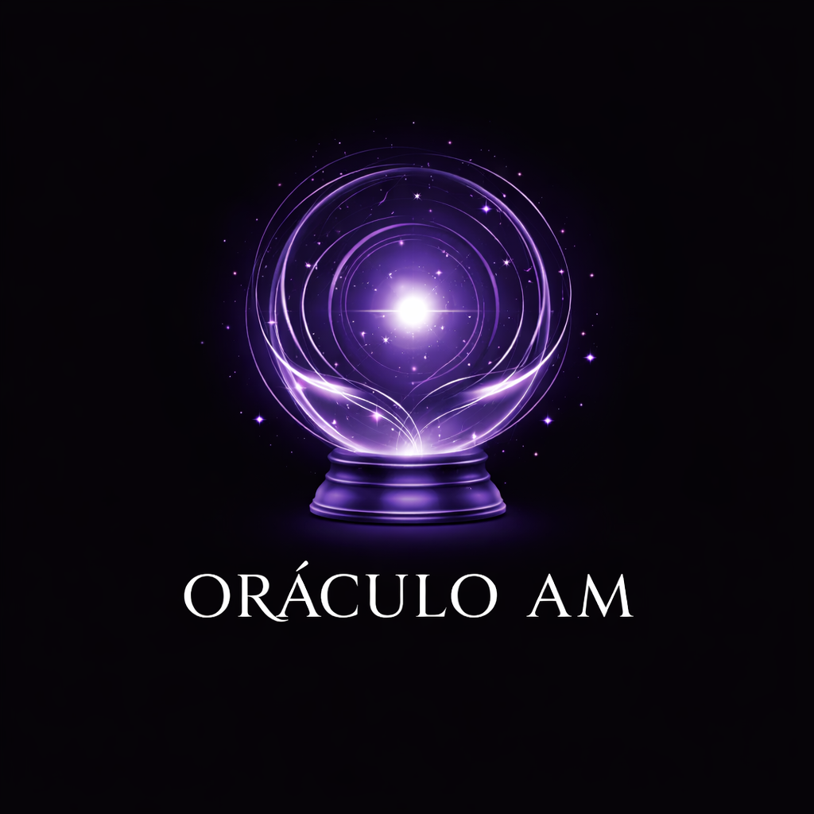

Oráculo AM
Anima Mundi
Respira.
Conecta.
Consulta.
Ábrete a recibir LA RESPUESTA,
no aquello que esperas o supones.
Permite que llegue.
TU CONSULTA GRATUITA
1 consulta cada día
En cada consulta puedes recibir 1, 3 o 5 respuestas.
Las respuestas pueden manifestarse como palabras, frases cortas o frases largas. También puede aparecer un Arcano Mayor del Tarot; cuando sucede, el Arcano constituye la respuesta completa y no se combina con otras respuestas.
¿Cómo interpretar varias respuestas?
Con 1 respuesta, observa su mensaje.
Con 3 respuestas, presta especial atención a la primera y la tercera.
Con 5 respuestas, presta especial atención a la primera y la quinta.
Formula una sola pregunta.
Puedes escribirla o mantenerla clara en tu mente.
Tu pregunta no se guarda en Oráculo AM.
ORÁCULO AM PRO
USD 9,90 / mes
Una experiencia de consulta más amplia y profunda.
- Hasta 7 consultas diarias.
- Mayor probabilidad de recibir un Arcano Mayor del Tarot.
- Posibilidad de ampliar la respuesta con inteligencia artificial.
Membresía mensual. Requiere una suscripción PRO activa.
Accede a tu cuenta PRO mediante un código enviado a tu correo.
¿Te ha acompañado Oráculo AM?
Ayúdame a mantener vivo este proyecto.
☕ Invítame un caféEl aporte es voluntario, consciente y agradecido.
ACERCA DEL ORÁCULO AM
El Oráculo AM es una herramienta de reflexión. Sus respuestas no deben tomarse literalmente: son invitaciones a observar, interpretar y encontrar tu propia comprensión.
Este Oráculo honra la obra de Enrique Barrios.
Gracias por encender una luz que sigue iluminando...